Quand UX t’apprend comment créer un meilleur portfolio
Tu sais ces sites web que personne ne visite? Même pas avec un bon portfolio? Ouais, j’en avais un. Du coup, j’ai pensé que le design UX pouvait m’aider à l'améliorer. Et ça a marché!
Mais comment ça? Tu te demandes, évidemment. J’ai suivi un processus en quatre étapes : recherche, stratégie, conception et évaluation. Le voici, alors.
Dernière mise à jour : 13 octobre 2018 | Temps de lecture : ~10 minutes.
Étape 1 : recherche
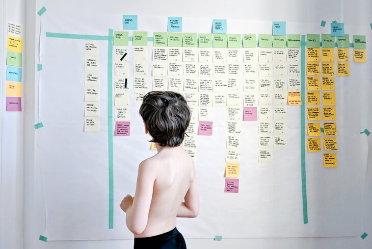Mon fils m’a montré que le fait d’avoir deux boutons pour trois langues était assez mêlant.
Mon ancien site internet avait des problèmes dont je croyais être alertée. Mais, après une semaine de recherche, j’ai constaté mon ignorance concernant le plus important.
D’un côté, l’analyse des données dénonçait l’absence de visites et d’engagement, ainsi qu’un taux de rebond énorme. Cela veut dire que les gens quittaient mon site très vite après avoir visité une page. On dirait qu'ils y faisaient une crise de panique.
De l’autre côté, l’observation des utilisateurs m’a prouvé que mon portfolio était presque inaccessible. Le menu de navigation mélangeait les testeurs et ils ignoraient quoi faire lors de leur visite.
Seigneur, je n’avais aucune idée à quel point mon site était déroutant.
Et pourquoi cela?
D’abord, j’ai utilisé un gabarit, ce qui n’a pas été très original. Ensuite, j’ai forcé une étude de cas complète dans une boite de dialogue. J’ai offert trop des choses à la fois. Et certainement, dès que mon site a été publié, ça m'est sorti de l'esprit.
Mais le vrai problème était quelque chose d’inattendu. Certains testeurs ignoraient qu’il fallait appuyer sur les vignettes du portfolio. Alors, ils manquaient le vrai travail et cela dépréciait toute sa valeur.
Lorsqu’un portfolio n’est pas trouvable, le site web d’une personne créative devient inutile.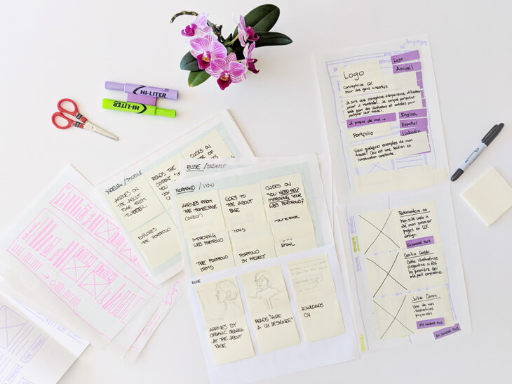
Des esquisses, des scénarios, des story-boards et l'un des prototypes pour ce site web.
Étape 2 : stratégie
J’avais donc un portfolio introuvable. Mon site web était voué à l’échec.
Afin de le corriger, j’ai pris les problèmes aperçus lors du test et les ai convertis en questions. Par exemple, comment puis-je développer un portfolio repérable? Voilà mes objectifs :
- Développer un portfolio repérable ;
- Livrer un site web avec une mission évidente ;
- Fournir une expérience de navigation fluide ;
- Doubler le trafic ;
- Réduire le taux de rebond à 70% ou moins ;
- Améliorer le référencement.
À ce moment-là, je savais quoi faire. Ensuite, il fallait déterminer pour qui. Alors, j’ai choisi mon audience : des créatifs.
J’ai défini le profil de trois personas : une gestionnaire, un client et une abonnée. Développer un site pour eux gardera mon message focalisé, relevant et simple.
Élise, une gestionnaire
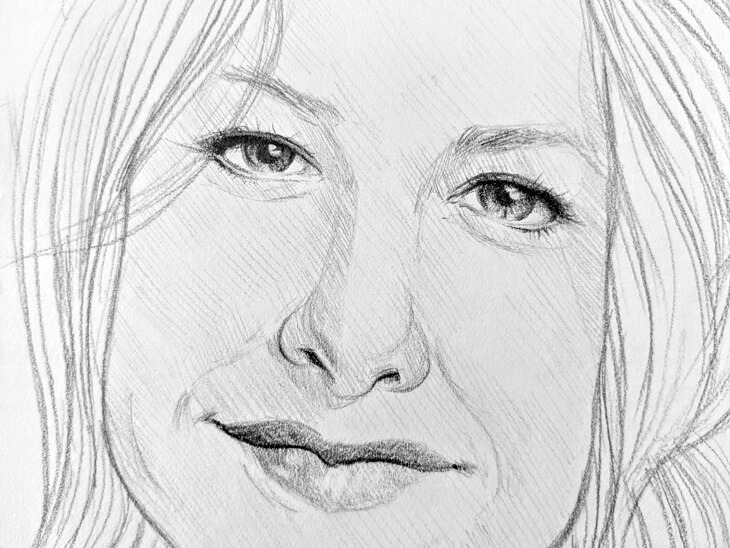« En tant que directrice de marketing, je cherche un concepteur UX afin de créer des sites centrés sur les visiteurs. » —Élise
Élise arrive à la page À propos grâce à une recherche en ligne à partir de son ordinateur de bureau. Elle cherche un/une concepteur/conceptrice UX à Montréal. D’abord, elle survole le contenu et télécharge mon CV. Ensuite, elle regarde les projets. Finalement, elle me contacté par téléphone.
Normand, un client
« En tant qu'illustrateur, je cherche un concepteur de sites web afin de promouvoir mon travail. » —Normand
Normand arrive à la page d’accueil en tapant mon adresse URL sur une tablette. Un de ses amis lui a conseillé de me contacter pour renouveler son site internet. Il appuie sur l’un des projets du portfolio, survole le processus et m'envoie un courriel.
Noelia, une abonnée
« En tant qu’étudiant, je veux me renseigner à propos de la conception UX, avant de suivre une spécialisation à ce sujet. » —Noelia
Noelia arrive à l’un des projets en cours à travers les médias sociaux. Elle utilise son cellulaire. Noelia lit très rapidement le contenu et explore quelques liens. Puisqu’elle trouve des informations utiles, elle devient mon abonnée.
Avant d’adopter un processus créatif centré sur l'utilisateur, j'esquissais selon un objectif global. C’est pourquoi au lieu de générer des idées différentes, j’itérais sur la même idée à plusieurs reprises.
Mais mon processus fit un grand bond en avant lorsque j’ai transformé les difficultés aperçues en questions. J’ai commencé à générer beaucoup des idées pour chacune. Il est bien plus facile d’attaquer un problème à la fois. Alors, je me trouve plus ingénieuse et focalisée.
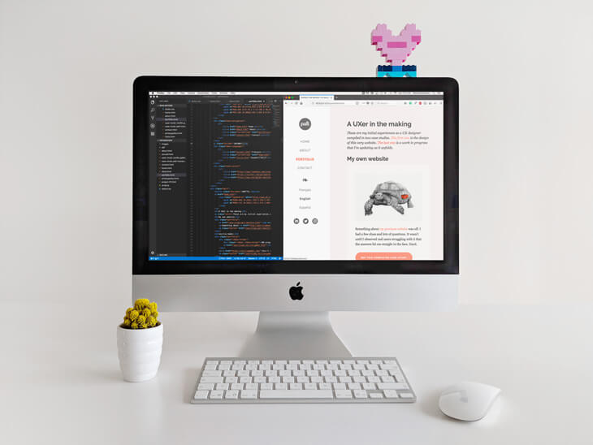Mon site web est très simple, car je suis en train d’apprendre l’intégration HTML/CSS et je n’ai pas l’intention de gérer un blogue.
Étape 3 : conception
Pour la nouvelle structure et le montage graphique de mon site web, je suis revenue à l’essentiel. Son architecture est basée sur quatre pages : accueil, à propos, portfolio et contact. Les étiquettes correspondantes dans le menu de navigation sont standards.
Je ne veux plus mêler mes visiteurs. J’espère plutôt qu’ils concentrent leur attention sur le contenu.
Afin de garder le site assez léger, j’ai choisi Georgia, une police qui est disponible sur tous les ordinateurs. Elle est très jolie et facile à lire sur l’écran. Je l’ai jumelée avec Raleway, une police Google. Ensemble, elles offrent une balance et un contraste adéquats pour mon contenu.
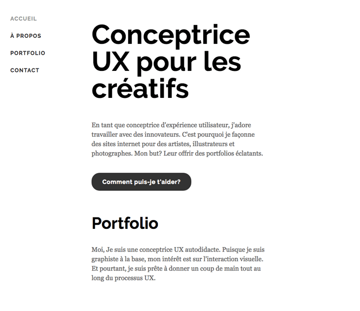Raleway pour les titres, Georgia pour les paragraphes.
Ensuite, j’établis une escale modulaire pour mon site réactif. J’aime bien ce que Zell Liew recommande : un ratio différent selon la taille des écrans. Plus l’écran est petit, plus fermé est le ratio.
- Téléphone — 15:16
- Tablette — 8:9
- Bureau — 5:6
- Gros écran — 4:6
Un ratio à grande échelle (1.414) pour un ordinateur de bureau. Le tout avait l’air disproportionné.
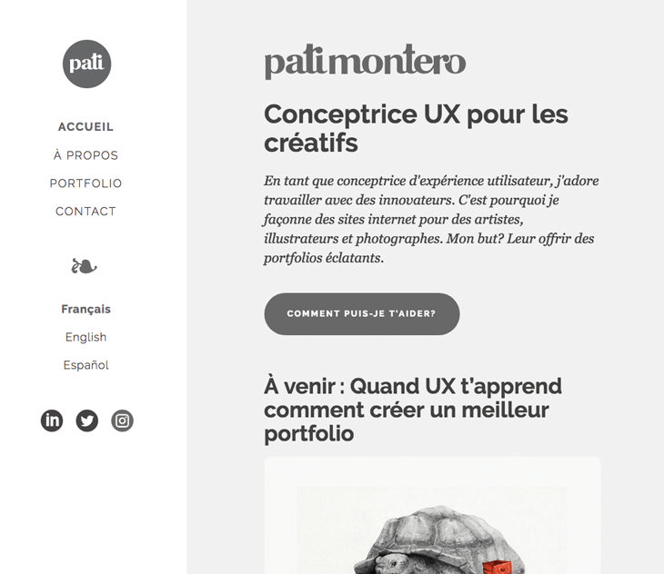Un ratio à petite échelle est mieux pour les différents écrans.
Lorsque j’étais satisfaite avec l’interface de base, j’ai commencé à développer ma palette des couleurs. En suivant ce tutoriel par Laura Elizabeth, j’ai choisi :
Le ton le plus foncé est réservé aux textes. Les accents, aux liens et boutons. Les plus pâles, pour les fonds.
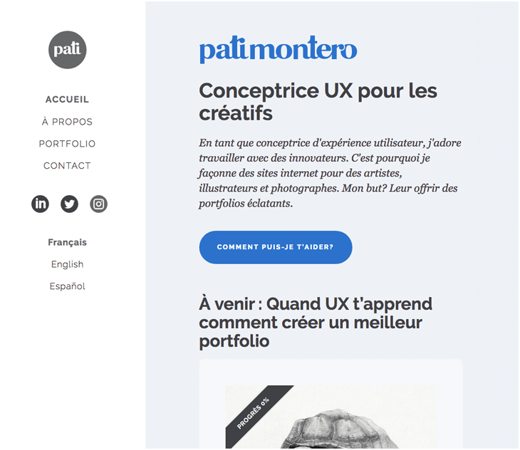La page d’accueil avec la palette de couleur appliquée.
Je cherche à produire une interface d'utilisateur intuitive. C’est pourquoi j’ai suivi quelques techniques de conception reliées à la navigation, l’accessibilité et la création du contenu. Voici les plus importantes à remarquer.
Navigation
- Indication de la page actuelle. Dans le menu principal, une étiquette en gras montre la page active.
- Changement de l’apparence. Sur les ordinateurs de bureau, les boutons et hyperliens réagissent sous le curseur.
- Des liens visités évidents. Les boutons et hyperliens changent de couleur afin de rappeler les utilisateurs de leurs actions.
- Page d’accueil accessible. Le logo sur l’en-tête ramène les visiteurs vers la page principale du site sur tous les dispositifs.
« La plupart des utilisateurs passent leur temps sur d’autres sites. Cela veut dire qu’ils préfèrent que ton site fonctionne de la même façon que tous les autres qui leur sont déjà familiers. » —Jakob Nielsen
Accessibilité
- Réactif. Conçu d’abord pour les appareils mobiles, le site s’adapte à quatre différentes grandeurs : téléphone, tablette, bureau et gros écran.
- Référencement délibéré. L’usage des titres, des en-têtes et des descriptions méta pour chaque page a été conçu pour orienter les visiteurs.
- Zones cliquables repérables. Les boutons sont apparents. Les hyperliens sont assez longs pour les activer avec les doigts.
- Contraste optimal. Les textes sont assez foncés sur des arrière-plans pâles. Le contraste fonctionne même pour les utilisateurs avec des limitations visuelles.
Simulation de la sensibilité à la lumière bleue.
Contenu
- Lisibilité aisée. Le niveau de lecture du contenu est similaire à celui des étudiants de la 5e année aux États-Unis.
- Facile à survoler. Des phrases et des paragraphes courts. Une idée à la fois et la première est souvent un résumé. Les titres énoncent un aperçu du contenu.
- Légèreté. J’ai optimisé les images afin de réduire le temps pour les télécharger. De plus, j’ai choisi de ne pas utiliser un système de gestion du contenu et cela m’a permis de garder un code plus épuré.
Des cartes thermiques faites par Hotjar's (bureau et téléphone). Les deux premières montrent les places où les gens cliquent. La dernière illustre avec des couleurs les pourcentages des zones aperçues. La couleur rouge montre ce qui a été vu par le 100% des visiteurs.
Étape 4 : évaluation
J’ai un travail à temps plein, une famille à garder et peu de temps en dehors de ça. De plus, mon budget pour cette évaluation est près du zéro. Donc, je dois être créative.
C’est pourquoi j’ai utilisé de différentes techniques :
Évaluation d’expert
Comme Everett N. McKay suggère, j’ai mené une inspection cognitive pas à pas de mon interface. Grosso modo, c’est une analyse détaillée du parcours des personas lorsqu’elles performent des tâches sur ton site. Cela aide à corriger quelques corvées avant de tester avec de vraies gens.
Observation contrôlée
Certains de mes collègues de travail correspondaient avec les profils de mes personas. Alors, je leur ai demandé de tester mon site en face de moi. Pour les remercier, je leur ai offert un petit service.
Ce n’est pas idéal, car ils me connaissent et parfois, ils étaient soucieux de me plaire. Mais c’est certain qu’ils m’ont révélé des choses que je n’aurai pas trouvées de mon côté.
Observation non contrôlée
C’est ici que la conception UX devient un peu bizarre. Il y a plein d’outils que te permettent de regarder de vrais utilisateurs sur ton site. C’est génial, mais ça me donne aussi des frissons. Voici ceux que j’aime le plus :
- Hotjar enregistre des usagers sur ton site et rend des captures d'écran et des vidéos pour toi. Cela m’a permis de voir la façon comme les visiteurs se déplacent à travers des pages. De plus, j’ai identifié les zones cruciales à considérer.
- UsabilityHub donne la possibilité de recueillir les premières impressions qu’un site provoque sur les visiteurs. Cela est possible grâce aux tests de cinq secondes.
- Usability Testing Exchange offre l’occasion d’inviter des gens à tester un site gratuitement. La seule chose qu’on doit faire est de retourner le service. Cela m’a permis de constater une erreur importante que je dois corriger lors de la nouvelle refonte de mon site.
- Validately te fournit les outils pour faire des tests de convivialité en ligne. Cela m’a donné la façon la plus efficace de tester mon site auprès des inconnus.
Une capture d’écran de mon tableau de bord Google Analytics. On compare les données recueillies entre janvier et octobre 2017 et 2018. Depuis que j’ai mis en place le nouveau design, le volume de visites a beaucoup amélioré et le taux de rebond a diminué de façon importante.
Le moment de vérité
J’aurais tellement aimé annoncer que j’ai atteint tous mes objectifs avec brio, mais ce n’est pas le cas. Voilà pourquoi :
- Développer un portfolio repérable : non. Selon les testeurs, c’est assez facile de trouver mon travail. Par contre, ils deviennent perdus lorsqu’ils sont dans une page d’étude de cas. Breadcrumbs, le petit lien au début de cette page, ce n’est pas assez. Une solution pourrait être l’ajout des projets dans le menu principal. Malheureusement, ceci n’est pas une solution pratique pour un menu latéral. Alors, cet objectif est nul.
- Livrer un site web avec une mission évidente : oui. Les usagers ont relié l’apparence de mon site avec la conception graphique, la recherche et l’illustration. Alors, celui-ci est bon. Yé!
- Fournir une expérience de navigation fluide : non. La plupart des testeurs ont été capables d’effectuer les tâches demandées. Cependant, le fait qu’il y a eu quelques-uns de perdus sur les pages du portfolio veut dire que cet objectif n’a pas été atteint.
- Doubler le trafic : oui. Voici le seul objectif qui a excédé mes atteintes de façon importante. Je sais que l’effort investi cette année n’a pas été le même que l’année dernière. Mais, ça fait du bien de voir comment tout cela a porté ses fruits.
- Réduire le taux de rebond à 70% ou moins : non. Aujourd’hui, je sais que j’étais assez naïve et optimiste quand j’y ai pensé. Et pourtant, même si je n’étais pas capable de le diminuer comme je voulais, une réduction de 20% me semble très réussie.
- Améliorer le référencement : oui. Je sais que mon site n’a pas généré assez de contenu pour que les gens le référencent. Pourtant, mon code est beaucoup plus sémantique maintenant et Google a mon plan de site. Ce qui veut dire que celui-ci est bon aussi.
Maintenant que l’évaluation est derrière moi, je suis certaine que mon site a atteint la moitié des objectifs. J’ai observé des gens le parcourir à l’aise et cela me parle fortement. Pourtant, les utilisateurs risquent d’être désorientés sur le portfolio. Cela implique une refonte essentielle. Mais ça, c’est une autre histoire.
Merci d’être ici avec moi. Si jamais tu as trouvé quelque chose d’intéressant, partage-la avec quelqu’un et je t’aimerai pour toujours. À très vite!
Clique sur les boutons ci-dessous pour des détails
À propos de mon site web
Ce site statique est hébergé sur GitHub et propulsé par Netlify.
Mes outils secrets pour écrire
C’est certain. Tu dois savoir que le français n’est pas ma langue maternelle. Mais, si par miracle ce n’est pas le cas, c'est seulement grâce à ces apps incroyables :
Dans les coulisses
De petits extras pour les geeks comme moi.
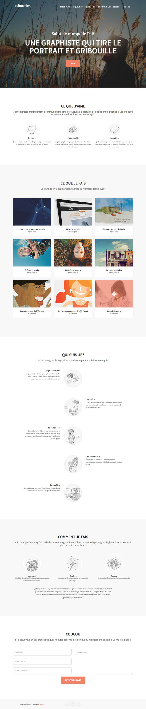Mon ancien site. Tu peux le visiter ici.
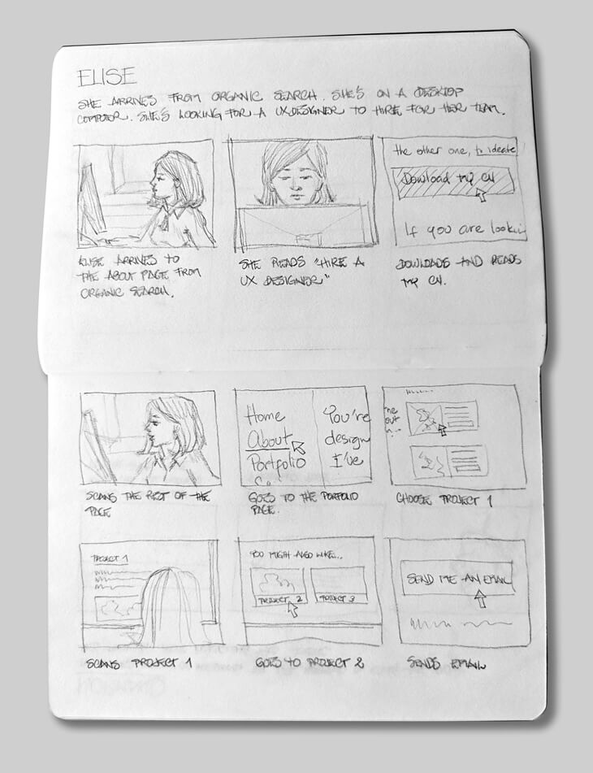Un des storyboards que j'ai fait pour Élise.

Un exemple des idées générales pour la page d'accueil et étude de cas.
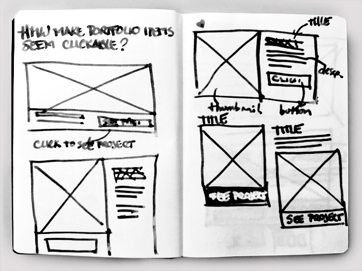Un exemple des idées générées à partir de mes questions.
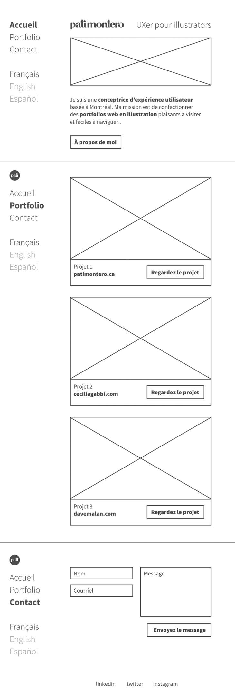Fil de fer initial pour ma page d'accueil.
En conception UX / UI
En design
En typographie
En rédaction
En productivité
© 2018-2019 Pati Montero ❧ Politique de confidentialité